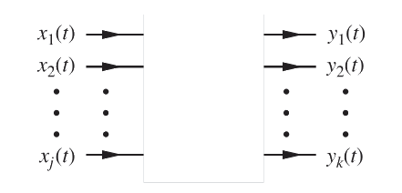
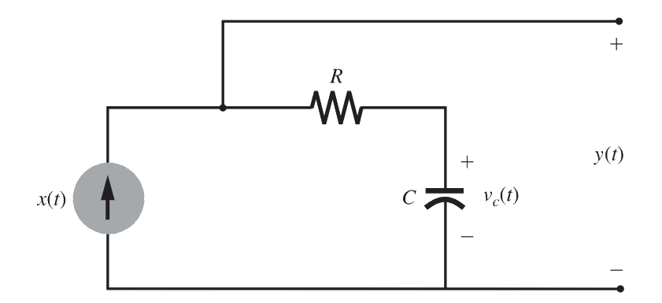
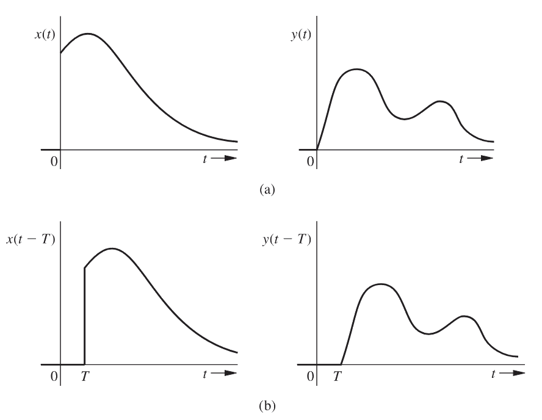
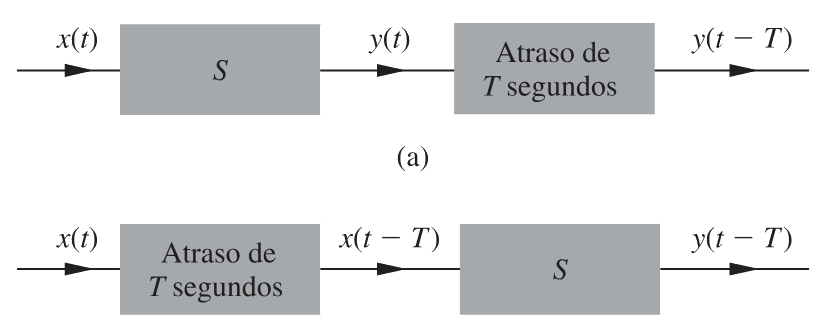
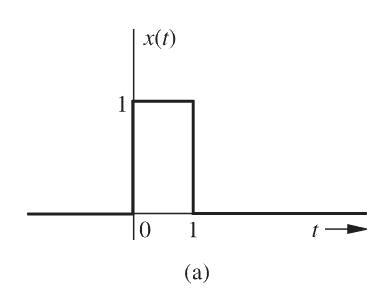
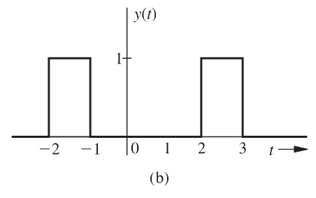
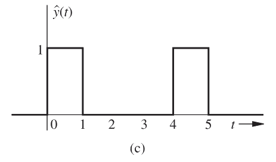
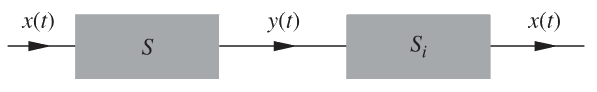
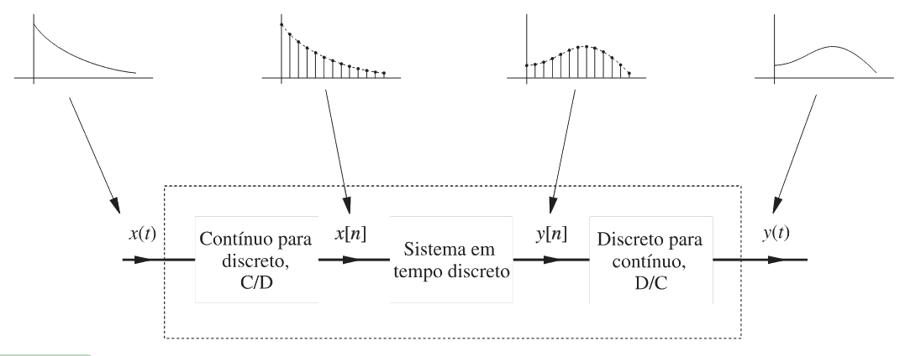

Introdução4.1
Os sinais podem ser processados posteriormente por sistemas, os quais têm a capacidade de modificá-los ou extrair informações adicionais.
Para ilustrar, imagine um operador de artilharia antiaérea que precisa saber a posição futura de um alvo hostil rastreado por seu radar. Conhecendo o sinal do radar, ele tem acesso à posição passada e à velocidade do alvo. Através do processamento desse sinal do radar (a entrada), ele pode estimar a posição futura do alvo.
Um sistema é uma entidade que processa um conjunto de sinais (entradas), resultando em um outro conjunto de sinais (saídas).
Um sistema pode ser construído com componentes físicos, como sistemas elétricos, mecânicos ou hidráulicos (realização em hardware), ou pode ser um algoritmo que calcula uma saída a partir de um sinal de entrada (realização em software).
Sistemas4.2
Como você pôde observar nas discussões anteriores, os sistemas são estruturas projetadas para processar sinais, permitindo a modificação ou a extração de informações adicionais contidas neles. Um sistema pode ser materializado de duas formas principais: através de componentes físicos, o que chamamos de implementação em hardware, ou por meio de um algoritmo que calcula o sinal de saída baseando-se no sinal de entrada, técnica conhecida como implementação em software.
De maneira geral, um sistema físico é composto por diversos elementos interconectados. Cada um desses componentes é caracterizado por sua relação terminal, ou seja, como ele se comporta entre a entrada e a saída. Além disso, o sistema é regido por leis fundamentais de interconexão. Em sistemas elétricos, por exemplo, as relações terminais referem-se às interações entre tensão e corrente em dispositivos como resistores, capacitores, indutores, transformadores e transistores. Já as leis de interconexão são representadas, por exemplo, pelas Leis de Kirchhoff. Ao aplicarmos esses princípios, conseguimos deduzir equações matemáticas que relacionam as saídas às entradas, formando o que chamamos de modelo matemático do sistema.
Para facilitar a visualização, você pode imaginar um sistema como uma "caixa preta". Nela, temos um conjunto de terminais acessíveis onde aplicamos as variáveis de entrada, representadas por $x_1(t), x_2(t), \dots, x_j(t)$, e outro conjunto de terminais onde observamos as variáveis de saída, denotadas por $y_1(t), y_2(t), \dots, y_k(t)$, conforme ilustrado na imagem abaixo:

O estudo de sistemas abrange três pilares fundamentais: a modelagem matemática, a análise e o projeto. Embora a modelagem seja o ponto de partida, o foco deste capítulo está voltado para a análise e o desenvolvimento. A maior parte do conteúdo aqui apresentado dedica-se ao problema da análise, que consiste em determinar quais serão as saídas do sistema para determinadas entradas, utilizando o modelo matemático ou as regras de governança conhecidas. Em uma escala complementar, também abordaremos o problema do projeto ou síntese, que busca compreender como construir um sistema capaz de produzir saídas específicas a partir de entradas dadas.
Lembre-se que o modelo matemático é a representação abstrata da realidade física, essencial para prevermos o comportamento de um sistema antes mesmo de sua construção.
Estudaremos como os sistemas podem ser organizados em categorias fundamentais para facilitar a análise e o projeto de modelos matemáticos. De modo geral, as principais classificações são:
- Sistemas lineares e não lineares: Diferenciam-se pela aplicação do princípio da superposição.
- Sistemas com parâmetros constantes ou variando no tempo: Refere-se a se as propriedades físicas do sistema mudam ou permanecem fixas ao longo do tempo.
- Sistemas instantâneos (sem memória) ou dinâmicos (com memória): Sistemas instantâneos dependem apenas da entrada atual, enquanto sistemas dinâmicos dependem de valores passados ou futuros.
- Sistemas causais ou não causais: Um sistema causal é aquele cuja saída em qualquer instante depende apenas de valores presentes ou passados da entrada.
- Sistemas inversíveis ou não inversíveis: Um sistema é inversível se for possível recuperar o sinal de entrada original a partir do sinal de saída.
- Sistemas estáveis ou instáveis: Trata-se do comportamento da saída em relação a entradas limitadas.
Sistemas Lineares e Não Lineares4.2.1
A classificação de sistemas quanto à sua linearidade, um dos conceitos mais fundamentais para a análise e o projeto de sistemas de controle e processamento de sinais. Um sistema é considerado linear quando sua saída é proporcional à sua entrada. Contudo, a linearidade matemática exige o cumprimento de duas propriedades fundamentais que, juntas, definem o princípio da superposição.
A primeira é a propriedade aditiva, que afirma que o efeito total de várias entradas atuando simultaneamente pode ser determinado pela soma dos efeitos de cada entrada considerada individualmente. Assim, se uma entrada $x_1$ produz um efeito $y_1$ ($x_1 \xrightarrow{S} y_1$) e uma entrada $x_2$ produz um efeito $y_2$ ($x_2 \xrightarrow{S} y_2$), então, a aplicação de ambas resulta na soma das saídas:
$$ \boxed{x_1 + x_2 \xrightarrow{S} y_1 + y_2} $$
A segunda é a propriedade de homogeneidade (escalamento), que dita que, se a entrada de um sistema for multiplicada por um fator constante $k$ (real ou imaginário), a saída também será multiplicada por esse mesmo fator. Considere uma entrada $x$ de forma que $x \xrightarrow{S} y$, então, para qualquer constante $k$:
$$ \boxed{kx \xrightarrow{S} ky} $$
Combinando ambas as propriedades, obtém-se a equação geral da superposição para quaisquer constantes $k_1$ e $k_2$:
$$k_1x_1 + k_2x_2 \xrightarrow{S} k_1y_1 + k_2y_2$$
Embora pareça que a aditividade obrigue a homogeneidade, nem sempre a homogeneidade é uma consequência direta da aditividade. Um sistema linear rigoroso também deve satisfazer a condição de suavidade, onde pequenas alterações nas entradas resultam em pequenas alterações nas saídas.
Para facilitar a compreensão, consideramos principalmente sistemas SISO (single-input, single-output ou entrada única e saída única), embora os mesmos conceitos se apliquem a sistemas MIMO (multiple-input, multiple-output). A saída de um sistema linear para $t \geq 0$ é influenciada por duas causas independentes:
- Condição inicial: o estado do sistema no instante $t = 0$.
- Entrada externa: o sinal $x(t)$ aplicado para $t \geq 0$.
Em sistemas lineares, a resposta total pode ser decomposta na soma de duas componentes distintas:
$$\text{resposta total} = \text{resposta entrada nula} + \text{resposta estado nulo}$$
A resposta a entrada nula é a saída gerada apenas pelas condições iniciais, assumindo que a entrada externa é zero ($x(t) = 0$). Já a resposta a estado nulo é a saída gerada apenas pela entrada externa, assumindo que todas as condições iniciais são nulas (o sistema está em estado nulo). Essa propriedade de decomposição é consequência direta da linearidade e do princípio da superposição.
Considere, por exemplo, um circuito elétrico simples, como o circuito RC ilustrado na imagem abaixo:

A resposta $y(t)$ para esse sistema pode ser expressa matematicamente como:
$$y(t) = \underbrace{v_c(0)}_{\text{componente entrada nula}} + \underbrace{Rx(t) + \frac{1}{C}\int_{0}^{t}x(\tau)d\tau}_{\text{componente estado nulo}}$$
Nesse exemplo, se a entrada $x(t)$ for zero, resta apenas a tensão inicial do capacitor $v_c(0)$. Se a tensão inicial for zero, a saída dependerá exclusivamente da entrada externa. Ambas as componentes (entrada nula e estado nulo) obedecem, individualmente, ao princípio da superposição. Portanto, se dobrarmos a condição inicial, a resposta a entrada nula também dobrará, e se escalarmos a entrada externa, a resposta a estado nulo será escalada na mesma proporção, preservando a linearidade do sistema.
Mostre que o sistema descrito pela equação diferencial abaixo é linear:
$$\frac{dy}{dt} + 3y(t) = x(t) \text{}$$
Seja $y_1(t)$ a resposta para a entrada $x_1(t)$ e $y_2(t)$ para a entrada $x_2(t)$:
$$ \begin{gather*} \frac{dy_1}{dt} + 3y_1(t) &= x_1(t) \\[12pt] \frac{dy_2}{dt} + 3y_2(t) &= x_2(t) \end{gather*} $$
Defina agora uma nova entrada como combinação linear das anteriores e sua saída respectiva:
$$ \begin{gather*} &x_3(t) = a x_1(t) + b x_2(t) \\[12pt] x_3(t) \xrightarrow{S} &y_3(t) = a y_1(t) + b y_2(t) \end{gather*} $$
Multiplicando a primeira equação por $a$ e a segunda por $b$, temos:
$$ \begin{gather*} a\frac{dy_1}{dt} + 3a y_1(t) = a x_1(t) \\[12pt] b\frac{dy_2}{dt} + 3b y_2(t) = b x_2(t) \end{gather*} $$
Somando as duas equações:
$$ \begin{gather*} a\frac{dy_1}{dt} + b\frac{dy_2}{dt} + 3[a y_1(t) + b y_2(t)] = a x_1(t) + b x_2(t) \\[12pt] \frac{d}{dt}[a y_1(t) + b y_2(t)] + 3[a y_1(t) + b y_2(t)] = a x_1(t) + b x_2(t) \end{gather*} $$
Substituindo pelas definições de $y_3(t)$ e $x_3(t)$:
$$ \boxed{ \frac{dy_3}{dt} + 3y_3(t) = x_3(t) } $$
Portanto, a resposta do sistema à entrada $x_3(t) = a x_1(t) + b x_2(t)$ é exatamente $y_3(t) = a y_1(t) + b y_2(t)$, o que satisfaz o princípio da superposição (aditividade + homogeneidade). Logo, o sistema é linear.
Mostre que o sistema descrito pela seguinte equação é linear:
$$\frac{dy}{dt} + t^2 y(t) = (2t + 3)x(t)$$
Seja $y_1(t)$ a resposta para a entrada $x_1(t)$ e $y_2(t)$ a resposta para a entrada $x_2(t)$:
$$ \begin{gather*} \frac{dy_1}{dt} + t^2 y_1(t) = (2t + 3)x_1(t) \\[12pt] \frac{dy_2}{dt} + t^2 y_2(t) = (2t + 3)x_2(t) \end{gather*} $$
Defina agora uma nova entrada como combinação linear das anteriores e sua saída respectiva:
$$ \begin{gather*} &x_3(t) = a x_1(t) + b x_2(t) \\[12pt] x_3(t) \xrightarrow{S}&y_3(t) = a y_1(t) + b y_2(t) \end{gather*} $$
Multiplicando a primeira equação por $a$ e a segunda por $b$, temos:
$$ \begin{gather*} a\frac{dy_1}{dt} + a t^2 y_1(t) = a(2t + 3)x_1(t) \\[12pt] b\frac{dy_2}{dt} + b t^2 y_2(t) = b(2t + 3)x_2(t) \end{gather*} $$
Somando as duas equações:
$$ \begin{gather*} a\frac{dy_1}{dt} + b\frac{dy_2}{dt} + t^2[a y_1(t) + b y_2(t)] = (2t + 3)[a x_1(t) + b x_2(t)] \\[12pt] \frac{d}{dt}[a y_1(t) + b y_2(t)] + t^2[a y_1(t) + b y_2(t)] = (2t + 3)[a x_1(t) + b x_2(t)] \end{gather*} $$
Substituindo pelas definições de $y_3(t)$ e $x_3(t)$:
$$ \boxed{ \frac{dy_3}{dt} + t^2 y_3(t) = (2t + 3)x_3(t) } $$
Portanto, a resposta do sistema à entrada $x_3(t) = a x_1(t) + b x_2(t)$ é exatamente $y_3(t) = a y_1(t) + b y_2(t)$, o que satisfaz o princípio da superposição (aditividade + homogeneidade). Logo, o sistema é linear.
Mostre que o sistema descrito pela seguinte equação não é linear:
$$
y(t)\frac{dy}{dt} + 3y(t) = x(t)
$$
Seja $y_1(t)$ a resposta para a entrada $x_1(t)$ e $y_2(t)$ a resposta para a entrada $x_2(t)$:
$$ \begin{gather*} y_1(t)\frac{dy_1}{dt} + 3y_1(t) = x_1(t) \\[12pt] y_2(t)\frac{dy_2}{dt} + 3y_2(t) = x_2(t) \end{gather*} $$
Defina agora uma nova entrada como combinação linear das anteriores e sua saída respectiva:
$$ \begin{gather*} &x_3(t) = a x_1(t) + b x_2(t) \\[12pt] x_3(t) \xrightarrow{S} &y_3(t) = a y_1(t) + b y_2(t) \end{gather*} $$
Agora, passe a nova entrada $x_3(t)$ diretamente pelo sistema, isto é, substitua $x(t)$ por $x_3(t)$ na equação original:
$$ y(t)\frac{dy}{dt} + 3y(t) = x(t) \;\;\Longrightarrow\;\; y_3(t)\frac{dy_3}{dt} + 3y_3(t) = x_3(t) $$
Substituindo a definição de $x_3(t) = a x_1(t) + b x_2(t)$ e também a definição esperada pela linearidade $y_3(t) = a y_1(t) + b y_2(t)$:
$$ \begin{gather*} y_3(t)\frac{dy_3}{dt} + 3y_3(t) = a x_1(t) + b x_2(t) \\[12pt] \big[a y_1(t) + b y_2(t)\big] \frac{d}{dt}\big[a y_1(t) + b y_2(t)\big] + 3\big[a y_1(t) + b y_2(t)\big] = a x_1(t) + b x_2(t) \end{gather*} $$
Calculando a derivada:
$$ \frac{d}{dt}\big[a y_1(t) + b y_2(t)\big] = a\frac{dy_1}{dt} + b\frac{dy_2}{dt} $$
Substituindo:
$$ \begin{gather*} \big[a y_1(t) + b y_2(t)\big] \big[a\frac{dy_1}{dt} + b\frac{dy_2}{dt}\big] + 3a y_1(t) + 3b y_2(t) = a x_1(t) + b x_2(t) \end{gather*} $$
Expandindo o termo não linear:
$$ \begin{gather*} a^2 y_1(t)\frac{dy_1}{dt} + ab\, y_1(t)\frac{dy_2}{dt} + ab\, y_2(t)\frac{dy_1}{dt} + b^2 y_2(t)\frac{dy_2}{dt} + 3a y_1(t) + 3b y_2(t) = a x_1(t) + b x_2(t) \end{gather*} $$
Usando as equações originais:
$$
y_1(t)\frac{dy_1}{dt} + 3y_1(t) = x_1(t), \qquad
y_2(t)\frac{dy_2}{dt} + 3y_2(t) = x_2(t),
$$
podemos identificar apenas os termos:
$$
a^2 x_1(t) + b^2 x_2(t)
$$
porém sobram os termos cruzados não lineares:
$$ ab\, y_1(t)\frac{dy_2}{dt}, \qquad ab\, y_2(t)\frac{dy_1}{dt}, $$
que não pertencem à combinação linear $a x_1(t) + b x_2(t)$.
Logo, a saída real obtida ao passar $x_3(t)$ pelo sistema é:
$$ y_3(t) \neq a y_1(t) + b y_2(t) $$
ou equivalentemente,
$$ \boxed{ S[a x_1(t) + b x_2(t)] \neq aS[x_1(t)] + bS[x_2(t)] } $$
Portanto, o sistema não satisfaz o princípio da superposição. Assim, o sistema é não linear.
Sistemas Invariantes e Variantes no Tempo4.2.2
Sistemas cujos parâmetros não sofrem alterações ao longo do tempo são classificados como invariantes no tempo, também conhecidos como sistemas de parâmetros constantes. Para esses sistemas, se a entrada for atrasada por $T$ segundos, a saída resultante será a mesma de antes, porém igualmente atrasada por $T$ segundos, assumindo que as condições iniciais também acompanhem esse atraso.
Esta propriedade fundamental é ilustrada graficamente na imagem abaixo:

Também podemos compreender essa característica observando a relação de comutatividade entre o sistema e o atraso. Conforme mostrado nos diagramas a seguir, em um sistema invariante no tempo, o resultado de aplicar um atraso à saída $y(t)$ é idêntico ao resultado de aplicar o atraso à entrada $x(t)$ antes de processá-la pelo sistema.

Em outras palavras, o sistema $S$ e a operação de atraso temporal são comutativos se, e somente se, o sistema for invariante no tempo. Essa característica não é válida para os sistemas variantes no tempo.
Para exemplificar, considere um sistema definido pela relação $y(t) = e^{-t}x(t)$. A saída desse sistema ao atrasarmos o sinal após o processamento (caso do diagrama a) seria $e^{-(t - T)}x(t - T)$, enquanto a saída obtida ao atrasarmos a entrada antes do sistema (caso do diagrama b) seria $e^{-t}x(t - T)$. Como os resultados são diferentes, o sistema é classificado como variante.
Na prática, é possível verificar que o circuito ilustrado abaixo é invariante no tempo:
Circuitos compostos por elementos RLC e outros componentes ativos, como transistores, são exemplos típicos de sistemas invariantes no tempo. Um sistema descrito por uma equação diferencial linear, como as vistas nos exemplos anteriores, é um sistema linear invariante no tempo (LIT) quando os coeficientes $a_i$ e $b_i$ são constantes. Se esses coeficientes forem funções do tempo, o sistema é então classificado como linear variante no tempo.
Outro exemplo familiar de sistema variante no tempo é o microfone de carbono. Nele, a resistência $R$ varia conforme a pressão mecânica gerada pelas ondas sonoras, fazendo com que a corrente de saída seja modulada pelo som, conforme desejado para a transmissão da informação.
Para testar a invariância no tempo, sempre compare se $S[x(t-T)]$ é igual a $y(t-T)$. Se a regra de transformação do sistema depender explicitamente da variável $t$ (como um multiplicador $t$ ou $e^{-t}$), o sistema será variante no tempo.
Mostre que o sistema descrito pela seguinte equação é um sistema com parâmetros variantes no tempo:
$$y(t) = (\text{sen } t)x(t - 2)$$
Para que um sistema seja invariante no tempo, um deslocamento na entrada deve produzir exatamente o mesmo deslocamento na saída. Em termos formais, se $y(t) = S[x(t)]$, então deve valer a igualdade $S[x(t - t_0)] = y(t - t_0)$ para qualquer atraso $t_0$.
Considere a resposta do sistema a uma entrada genérica $x_1(t)$, dada por:
$$y_1(t) = (\text{sen } t)x_1(t - 2)$$
Se deslocarmos essa saída no tempo de $t_0$, obtemos:
$$y_1(t - t_0) = \text{sen}(t - t_0)\,x_1(t - t_0 - 2)$$
Agora, aplique ao sistema a entrada atrasada $x_1(t - t_0)$. Definindo $x_2(t) = x_1(t - t_0)$, a resposta do sistema é:
$$y_2(t) = (\text{sen } t)x_2(t - 2)$$
Substituindo $x_2(t)$ pela definição em termos de $x_1(t)$:
$$y_2(t) = (\text{sen } t)x_1(t - 2 - t_0)$$
Comparando as duas expressões obtidas, temos:
$$
y_1(t - t_0) = \text{sen}(t - t_0)\,x_1(t - t_0 - 2), \qquad
y_2(t) = (\text{sen } t)\,x_1(t - t_0 - 2)
$$
Observa-se que, embora o argumento de $x_1$ seja o mesmo nas duas expressões, o fator multiplicativo é diferente: no primeiro caso aparece $\text{sen}(t - t_0)$, enquanto no segundo aparece $\text{sen}(t)$. Como o termo $\text{sen}(t)$ depende explicitamente do tempo e não sofre o mesmo deslocamento, as duas saídas não coincidem:
$$y_2(t) \neq y_1(t - t_0)$$
Logo,
$$
\boxed{S[x(t - t_0)] \neq y(t - t_0)}
$$
Portanto, o sistema não é invariante no tempo. Consequentemente, trata-se de um sistema com parâmetros variantes no tempo.
Sistemas Instantâneos e Dinâmicos4.2.3
Como você pôde observar anteriormente, a saída de um sistema em um instante $t$ qualquer geralmente depende de todo o histórico passado da entrada. Entretanto, existe uma classe especial de sistemas na qual a saída em qualquer instante $t$ depende exclusivamente da entrada aplicada naquele exato momento. Em circuitos puramente resistivos, por exemplo, qualquer saída observada em um instante de tempo $t$ é determinada apenas pela entrada no instante $t$. Nesses modelos, a história passada das entradas é considerada irrelevante para a definição da resposta atual. Tais sistemas são denominados sistemas instantâneos ou sistemas memoryless (sem memória).
Mais precisamente, você deve classificar um sistema como instantâneo se sua saída em um instante $t$ depender, no máximo, da intensidade de suas entradas no mesmo instante $t$, sem sofrer influência de valores passados ou futuros das entradas. Caso essa dependência em relação a outros instantes de tempo ocorra, o sistema é chamado de dinâmico ou sistema com memória.
Dentro da categoria dos sistemas dinâmicos, podemos distinguir a extensão do impacto temporal. Um sistema cuja resposta no instante $t$ seja completamente definida pelos sinais de entrada ocorridos nos últimos $T$ segundos, compreendendo o intervalo de $(t - T)$ a $T$, é conhecido como um sistema de memória finita com uma duração de $T$ segundos. Por outro lado, circuitos que utilizam elementos indutivos e capacitivos geralmente apresentam memória infinita, pois a resposta nesses sistemas em qualquer instante $t$ é influenciada por todo o histórico acumulado de suas entradas, abrangendo o intervalo de $(-\infty, t)$. Essa característica de memória infinita é essencial para compreendermos o comportamento do circuito RC representado abaixo:
Neste capítulo, nosso foco principal será o estudo dos sistemas dinâmicos. É importante que você perceba que os sistemas instantâneos são, na verdade, um caso particular e simplificado dentro do universo dos sistemas dinâmicos.
Sistemas Causal e Não Causal4.2.4
Um sistema causal, também conhecido tecnicamente como físico ou não antecipativo, é aquele no qual a saída em um instante qualquer $t_0$ depende exclusivamente dos valores da entrada $x(t)$ para o intervalo $t \le t_0$. Em termos práticos, você deve compreender que o valor da saída no instante presente é influenciado apenas pelos estados atual e passados da entrada $x(t)$, sem qualquer dependência de seus valores futuros. Para simplificar esse conceito, em um sistema causal, a saída jamais pode se iniciar antes que a entrada seja efetivamente aplicada. Caso a resposta comece antes da entrada, isso sugeriria que o sistema possui o conhecimento prévio de uma entrada futura e atua com base nessa antecipação, o que caracteriza um sistema não causal ou antecipativo.
É fundamental notar que qualquer sistema prático projetado para operar em tempo real deve, obrigatoriamente, ser causal. Atualmente, não dispomos de tecnologia para construir sistemas que respondam a estímulos que ainda não ocorreram. O sistema não causal permanece como um modelo hipotético que "conhece" a entrada futura e atua sobre ela no presente. Assim, se você aplicar uma entrada começando em $t = 0$ a um sistema dessa natureza, a saída poderá se manifestar antes mesmo desse instante inicial.
Considere, por exemplo, o sistema especificado pela seguinte equação:
$$y(t) = x(t - 2) + x(t + 2)$$
Para uma entrada $x(t)$ como a ilustrada na imagem abaixo, a saída $y(t)$, calculada a partir da equação acima, começa antes mesmo da entrada ser aplicada:


Essa equação demonstra que a saída $y(t)$ no instante $t$ é composta pela soma dos valores de entrada ocorridos $2$ segundos antes e $2$ segundos após o instante atual. Se você estiver operando em tempo real, é impossível prever o valor da entrada que ocorrerá $2$ segundos no futuro. Por essa razão, sistemas não causais não são realizáveis em operações de processamento imediato.
Um sistema não causal pode ser satisfatoriamente aproximado em tempo real através de um sistema causal que utilize um atraso de tempo.
Se você aceitar um atraso na saída, como demonstrado na imagem abaixo, o sistema torna-se realizável:

Ao atrasarmos a saída da equação anterior em $2$ segundos, obtemos:
$$y_{atrasado}(t) = x(t) + x(t - 4)$$
Agora, a saída depende apenas do valor presente e de um valor ocorrido $4$ segundos atrás, tornando o sistema perfeitamente causal. Além disso, os sistemas não causais servem como um limite superior para o desempenho. Ao projetar um filtro para limpar ruídos, o modelo matemático "ótimo" é invariavelmente não causal. Embora ele não possa ser construído fisicamente sem atrasos, ele estabelece o padrão de perfeição para compararmos a eficiência dos nossos filtros causais reais.
Não há nada de misterioso na implementação desses modelos. Pense na seguinte analogia: se você quiser saber o que acontecerá daqui a um ano, pode procurar um profeta (não realizável) que dê a resposta agora, ou consultar um sábio e permitir a ele um atraso de um ano para processar os dados e entregar a resposta. Se o sábio for competente, ele poderá até aproximar o futuro com um atraso menor, analisando tendências, exatamente como fazemos ao aproximar sistemas não causais através de atrasos físicos.
Mostre que o sistema descrito pela equação abaixo é não causal:
$$y(t) = \int_{t-5}^{t+5} x(\tau)\,d\tau$$
Mostre que esse sistema pode ser implementado fisicamente se aceitarmos um atraso de 5 segundos da saída.
1. Não causalidade
A saída $y(t)$ em um instante $t$ depende dos valores da entrada $x(\tau)$ no intervalo $[t-5,\;t+5]$. Esse intervalo inclui valores futuros da entrada, pois $\tau$ pode ser maior que $t$ (até $t+5$). Por exemplo, para calcular $y(0)$ precisamos de $x(\tau)$ para $\tau \in [-5,5]$, ou seja, precisamos conhecer $x(0.1), x(2), \dots$ antes que esses instantes ocorram. Como a saída depende de valores futuros da entrada, o sistema é não causal.
2. Implementação física com atraso
Se atrasarmos a saída em 5 segundos, obtemos um novo sinal $z(t) = y(t-5)$. Então:
$$ z(t) = y(t-5) = \int_{(t-5)-5}^{(t-5)+5} x(\tau)\,d\tau = \int_{t-10}^{t} x(\tau)\,d\tau. $$
Agora, $z(t)$ depende apenas dos valores de $x(\tau)$ no intervalo $[t-10, t]$, ou seja, apenas de valores passados e presentes da entrada (nenhum valor futuro). Portanto, o sistema que produz $z(t)$ a partir de $x(t)$ é causal e pode ser implementado fisicamente.
Em termos práticos, se o sistema original for seguido de um atraso de 5 segundos, a cascata resulta em um sistema causal. Assim, aceitando que a saída útil seja entregue com 5 segundos de atraso, o processamento torna-se realizável.
Sistemas Inversíveis e Não Inversíveis4.2.5
Quando você analisa a operação de um sistema $S$ sobre um sinal de entrada, é fundamental entender se o processo pode ser revertido. Se for possível recuperar o sinal de entrada original $x(t)$ a partir da saída correspondente $y(t)$ através de alguma operação compensatória, você está diante de um sistema inversível. Para que isso ocorra, é essencial que cada entrada produza uma saída única, garantindo a existência de um mapeamento one-to-one (um-para-um) entre elas.
Por outro lado, existem situações em que diferentes sinais de entrada resultam na mesma saída, como acontece em um retificador. Nesses casos, a informação original se perde no processamento, tornando impossível determinar qual entrada gerou aquele resultado específico, o que classifica o sistema como não inversível.
O componente que realiza a tarefa de resgatar $x(t)$ a partir de $y(t)$ é denominado sistema inverso, frequentemente representado como $S_i$. Um exemplo clássico dessa relação ocorre no cálculo integral: se o sistema $S$ atua como um integrador ideal, o seu respectivo sistema inverso será um diferenciador ideal.
Ao conectar um sistema $S$ em série com o seu sistema inverso $S_i$, você estabelece o que chamamos de cascateamento, conforme ilustrado na imagem abaixo:

Nesta configuração, a entrada $x(t)$ é processada por $S$ para gerar $y(t)$, que serve imediatamente como entrada para $S_i$. Como $S_i$ desfaz a operação realizada por $S$, o sinal resultante na saída final será novamente $x(t)$.
Um sistema cuja saída é idêntica à sua entrada para todas as variações possíveis é chamado de sistema identidade. Você deve notar que o cascateamento de qualquer sistema inversível com seu inverso resulta, obrigatoriamente, em um sistema identidade.
Sistemas Estáveis e Instáveis4.2.6
Uma classificação fundamental para o seu entendimento sobre o comportamento dos modelos matemáticos é a distinção entre sistemas estáveis e instáveis. Essa estabilidade pode ser analisada sob duas perspectivas principais, a interna ou a externa.
Você deve considerar um sistema como externamente estável quando qualquer entrada limitada aplicada ao seu terminal resultar, obrigatoriamente, em uma saída que também seja limitada. Essa forma de estabilidade pode ser verificada de maneira prática através da medição direta dos sinais nos terminais externos de entrada e saída do sistema. Na engenharia, esse conceito é amplamente conhecido pelo termo BIBO, um acrônimo para a expressão em inglês Bounded-Input/Bounded-Output.
A imagem abaixo ilustra o processamento de sinais contínuos no tempo por sistemas discretos, um cenário onde a análise de estabilidade é crucial para o bom funcionamento do projeto:

Além disso, é importante notar que operações como o cascateamento de sistemas, representado na imagem a seguir, exigem que a estabilidade seja mantida ao longo de toda a estrutura:
Enquanto a estabilidade externa foca na relação observável entre entrada e saída, a estabilidade interna envolve o comportamento das variáveis dentro da estrutura do sistema. Devido à necessidade de um conhecimento mais aprofundado sobre o comportamento dos componentes internos, estudaremos esse conceito detalhadamente em um momento posterior deste capítulo.
O critério BIBO é uma garantia de que o sistema não apresentará uma saída que cresça indefinidamente, tendendo ao infinito, desde que a sua entrada permaneça dentro de limites controlados.
Mostre que o sistema descrito pela equação $y(t) = x^2(t)$ é não inversível e analise sua estabilidade no sentido BIBO.
1. Não inversibilidade
Um sistema é inversível se entradas diferentes produzem sempre saídas diferentes. Caso contrário, não é possível recuperar a entrada original a partir da saída.
Considere duas entradas distintas:
$$ x_1(t) = f(t) \quad \text{e} \quad x_2(t) = -f(t), $$
onde$ f(t)$ é um sinal qualquer não identicamente nulo. As saídas correspondentes são:
$$ y_1(t) = [f(t)]^2, \qquad y_2(t) = [-f(t)]^2 = [f(t)]^2. $$
Portanto, $y_1(t) = y_2(t)$ para todo $t$, mesmo tendo $x_1(t) \neq x_2(t)$. Logo, o sistema não é inversível, pois a informação do sinal (especialmente o sinal) é perdida na operação de quadrado.
2. Estabilidade BIBO
Um sistema é estável no sentido BIBO (Bounded-Input Bounded-Output) se toda entrada limitada produz uma saída limitada.
Suponha que a entrada $x(t)$ seja limitada, ou seja, existe uma constante $M > 0$ tal que $|x(t)| \le M$ para todo $t$. Então:
$$ |y(t)| = |x^2(t)| = |x(t)|^2 \le M^2 \quad \text{para todo } t. $$
A saída também é limitada (pela constante $M^2$). Portanto, o sistema é estável no sentido BIBO.
Conclusão: O sistema $y(t) = x^2(t)$ é não inversível, porém BIBO‑estável.
Questões4.3
1. Com base no Princípio da Superposição, que exige o cumprimento das propriedades de aditividade e homogeneidade, realize a demonstração matemática para provar a linearidade do sistema descrito pela equação diferencial abaixo:
$$\frac{dy}{dt} + 3y(t) = x(t)$$
- a) Defina as respostas individuais $y_1(t)$ e $y_2(t)$ para as entradas $x_1(t)$ e $x_2(t)$.
- b) Mostre que a resposta a uma combinação linear $ax_1(t) + bx_2(t)$ resulta na mesma combinação linear das saídas $ay_1(t) + by_2(t)$.
2. Analise a invariância temporal de um sistema. Conforme o Exemplo 4, um sistema é variante no tempo se sua regra de transformação depender explicitamente da variável $t$. Mostre matematicamente que o sistema $y(t) = (\text{sen } t)x(t - 2)$ é variante no tempo, comparando a saída de uma entrada atrasada $S[x(t - t_0)]$ com a saída atrasada $y(t - t_0)$.
3. Sobre a classificação de sistemas quanto à causalidade e a possibilidade de implementação física:
- a) Explique por que o sistema $y(t) = \int_{t-5}^{t+5} x(\tau)\,d\tau$ é classificado como não causal.
- b) Demonstre como este sistema pode se tornar causal e realizável em tempo real através da aplicação de um atraso de 5 segundos na saída, resultando em $z(t) = \int_{t-10}^{t} x(\tau)\,d\tau$.
4. Considere o sistema definido pela operação de elevar a entrada ao quadrado: $y(t) = x^2(t)$.
- a) Prove que este sistema é não inversível ao mostrar que duas entradas diferentes, como $x(t) = f(t)$ e $x(t) = -f(t)$, produzem a mesma saída.
- b) Verifique a estabilidade BIBO deste sistema, provando que se a entrada for limitada por uma constante $M$, a saída também permanecerá limitada.
5. A resposta total de um sistema linear pode ser decomposta em duas componentes independentes. Diferencie a resposta a entrada nula da resposta a estado nulo, explicando o papel das condições iniciais e da entrada externa em cada uma delas, utilizando como referência o exemplo do circuito RC:
$$y(t) = v_c(0) + Rx(t) + \frac{1}{C}\int_{0}^{t}x(\tau)d\tau$$
Próximos Passos4.4
No próximo capítulo, 5 - Convolução, descobriremos que um sistema LIT é completamente caracterizado por sua resposta ao impulso unitário $h(t)$. Aprenderemos a calcular essa "impressão digital" do sistema e a utilizar a Integral de Convolução para prever a saída do sistema para qualquer sinal de entrada imaginável.